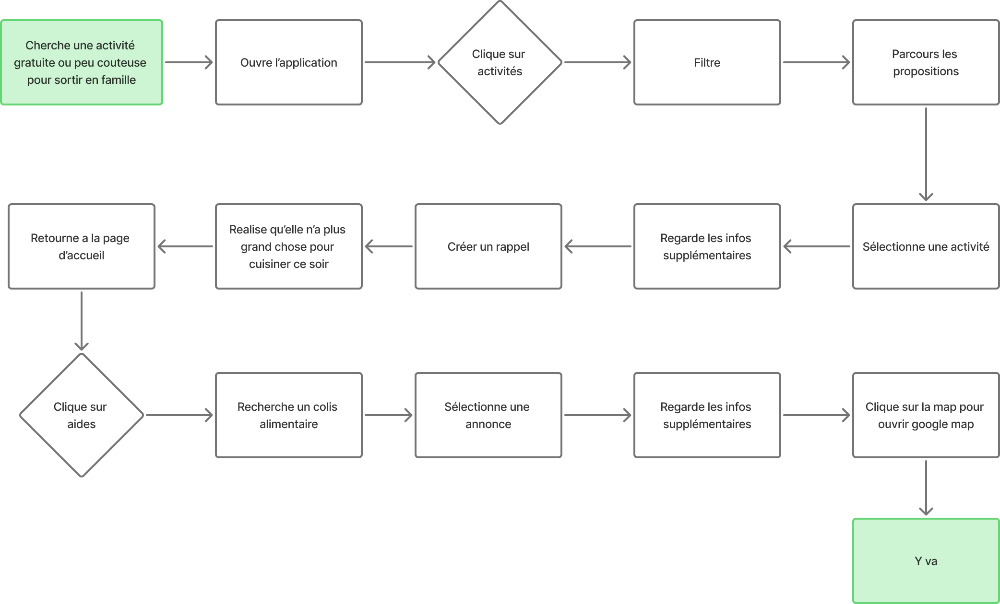
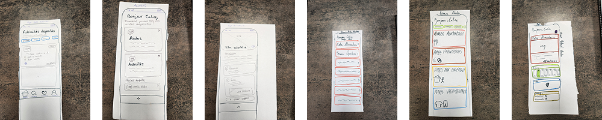
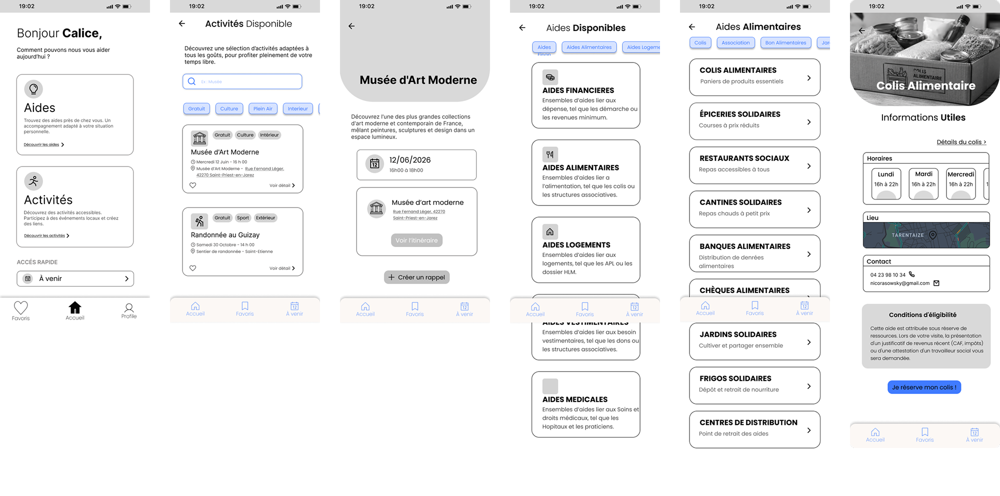
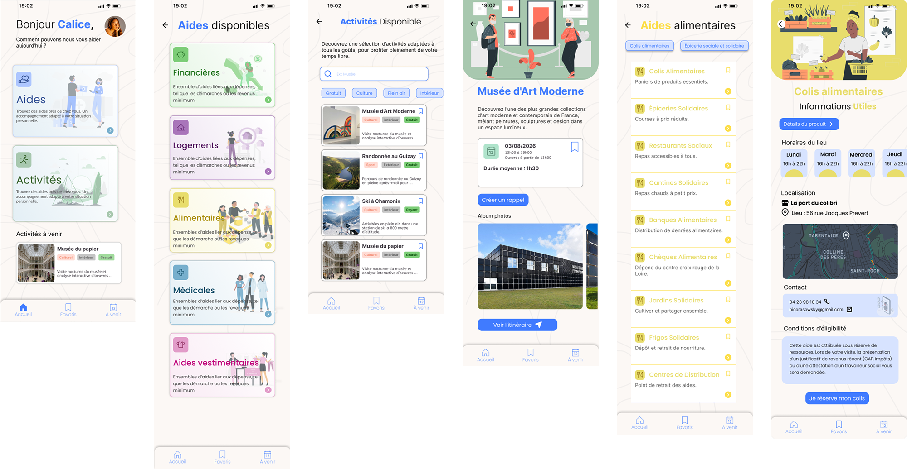

CONTEXTE
Diminuer la précarité des personnes qui nous entourent.

Tremplin a été imaginé le 1er juin dans les locaux de l’ISTP par Akram, Raïs, Jean et Sarah. Le but étant d’aider les personnes en situation de précarité.
PROBLEMATIQUE
Comment accompagner Calice vers des activités locales et des événements communautaires afin d'améliorer le bien-être de sa famille ?

BENCHMARK
Voici les 3 concurrents majeurs de Tremplin que nous avons rencontré :

C.A.F

Pôle Emploi

Impots.gouv
- Accompagne les personnes en difficulté financière grâce à diverses aides sociales
- Accompagnement vers l'insertion professionnelle
- Rôle administratif central et gestion des démarches essentielles
UTILISATEUR TYPE

USER FLOW

SOLUTIONS
WIREFRAME LOW-FI
C’est une représentation schématique de la structure et des
fonctionnalités d’une
application mobile ou d’un site web. Dessinées
sur papier ou de manière numérique, ces
maquettes offrent un
degré d’interactivité variable, jouant un rôle essentiel dans la
conception d’interfaces.

IDEATION MID-FI
Pour arriver au résultat final de notre application, nous avons
procédés
à un
round-robin,ainsi qu'à un brain storming. Ce qui nous a permis de
mettre en commun
toutes
les idées auxquelles nous avons pensés,et
c'est de cette manière que nous nous sommes
dirigés vers le résultat
final de notre application.

MOCK-UP HIGH-FI

TESTS UTILISATEURS
Retour sur les questions posées et modifications faites
Suite aux avis des personnes que l'on a interrogé sur le déroulé et
l'esthétique
de notre
application, voici les modifications que nous avons apporté
Avant / Après des tests utilisateurs :
Modification du bouton pour les details colis
AVANT

APRES

Remaniement du design des cartes aides
AVANT

APRES

Proposition de programmer un horaire pour le trajet
AVANT

APRES

PERSPECTIVES D'EVOLUTION
Dans un futur certain et suivant la levée de fonds, nous aimerions y
ajouter quelques
fonctionnalités
supplémentaires, telles que :
- Ajout de nouvelles aides
- Développement des activités sociales
- Personnalisation des recommandations